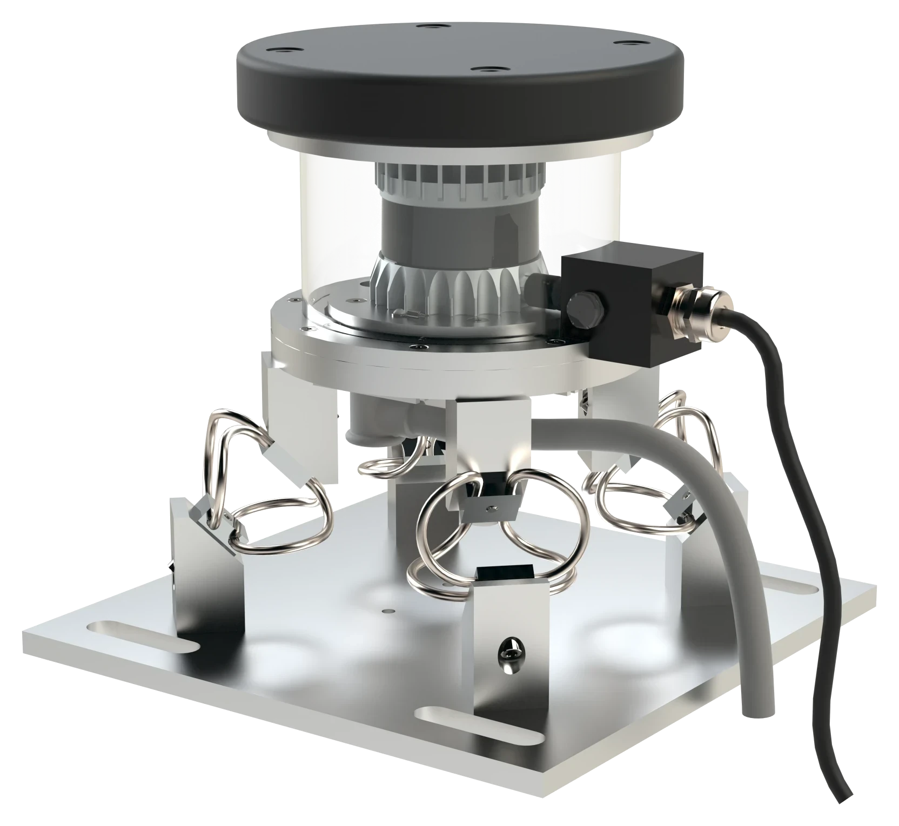
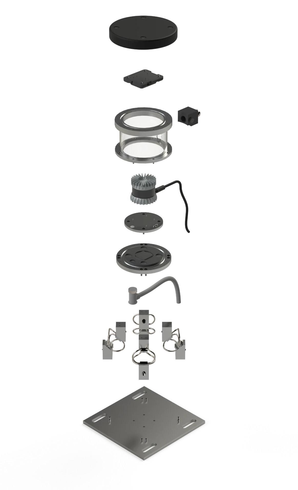
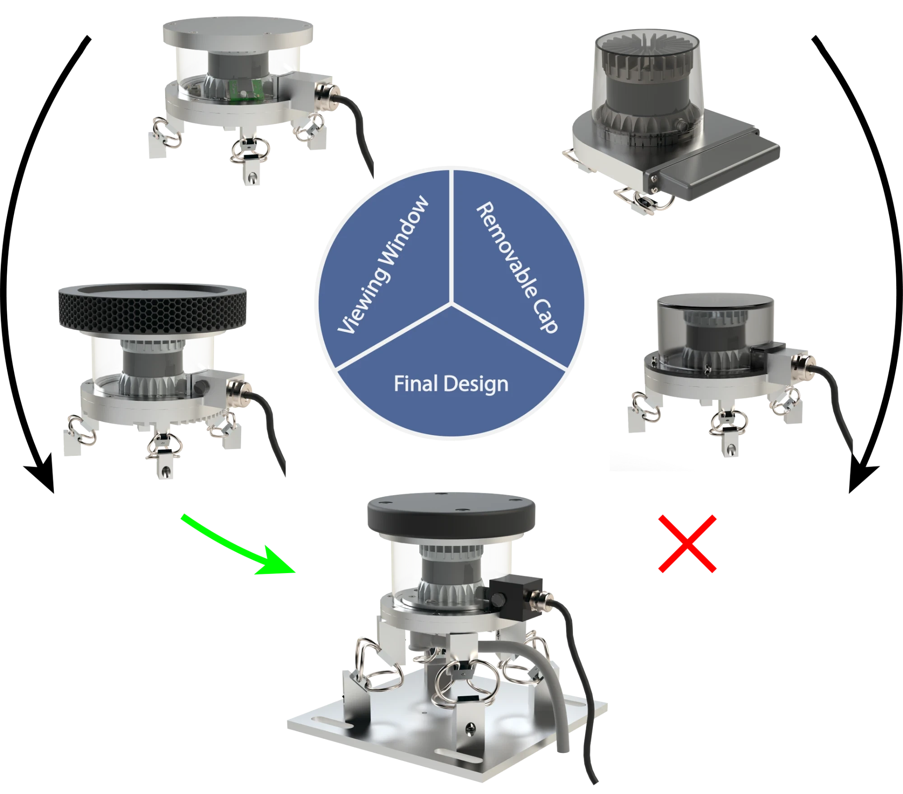

Engineering · Senior Project
Trimble LiDAR Sensor Enclosure
Trimble Autonomous Solutions
As the CAD/Design Engineer on my Senior Project Team, I led the design of a sensor enclosure to protect a LiDAR used on autonomous agricultural and construction vehicles. The enclosure was engineered to meet stringent ingress protection standards, dampen vibrational forces, maintain optimal operating temperatures in harsh environments, and minimize the impact on the LiDAR's performance and visibility.
- Role CAD / Design Engineer
- Sponsor Trimble Autonomous Solutions
- Application Autonomous vehicles
- Team CU Boulder Team 28 · Design Center Colorado
- Year 2020–2021
- 01Ingress protection
- 02Vibration damping
- 03Thermal management
- 04Minimal impact on LiDAR performance and visibility


